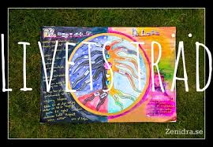
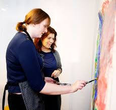
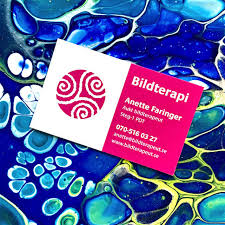

Att bryta sina mönster, en möjlighet att förändra ett alkohol/drogberoende.
Ett erbjudande om att individuellt eller i grupp öppet prata om riskbruk,
missbruk eller beroende. Bildspråket i kombination med intresseanmälan

Jag hör då av mig till Dig. För att veta mer om min bakgrund och arbetssätt,
gå till startsidan och läs min presentation under rubriken ”Vi bildterapeuter.”
Gunilla Berglund

Individuell bildterapi
Om Du har önskemål om individuell bildterapi; gå vidare till rubriken Vi bildterapeuter.
Där kan du se vilka som arbetar i Bildterapihuset. Du kan då själv ta kontakt via mail eller telefon.
Välkommen